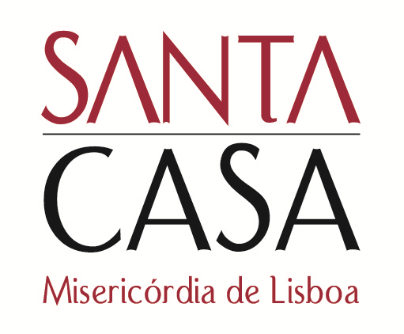
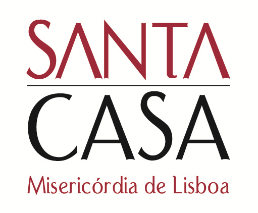
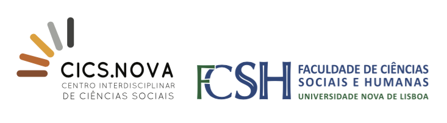
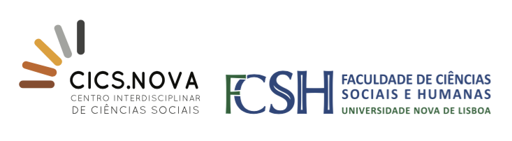
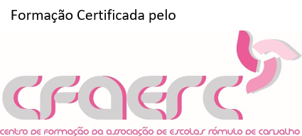

 



Entidade Promotora
- ComDignitatis - Associação Portuguesa para a Promoção da Dignidade Humana
Comissão Organizadora
- Procuradoria-Geral da República
- Ordem dos Advogados
- Direção-Geral de Reinserção e Serviços Prisionais
- Comissão Nacional de Promoção dos Direitos e Proteção das Crianças e Jovens
- Instituto da Segurança Social, I.P.
- Santa Casa da Misericórdia de Lisboa
- Centro de Estudos Judiciários
- Centro de Direito da Família da Universidade de Coimbra
- Centro Interdisciplinar de Ciências Sociais da Universidade Nova de Lisboa (CICS.NOVA)
- Universidade Atlântica
- Cáritas Portuguesa
- Casa Pia de Lisboa
- CrescerSer - Associação Portuguesa para o Direito dos Menores e da Família
Assistir ao congresso conta como horas de formação para professores e crédito para psicólogos.
Programa
| 08h30 |
Receção dos Participantes |
| 09h00 |
Sessão de Abertura |
| 09h30 |
“Acesso à Justiça e Participação: os Desafios da Convenção dos Direitos da Criança” “A Importância da Perspetiva da Criança na Análise do seu Direito à Participação nos Processos que lhe Dizem Respeito” |
| 10h30 |
Pausa para Café |
| 11h00 |
“Aspetos Psicossociais da Prevenção da Delinquência Juvenil” “A Intervenção da Comunidade e das Organizações na Prevenção da Delinquência Juvenil” “Transições online-offline: análise de alguns desafios do uso das redes sociais na infância e adolescência” |
| 12h45 |
Almoço livre |
| 14h15 |
“Prevenção da Delinquência Juvenil: Intervenção Situacional e Justiça Restaurativa” |
| 15h00 |
“«Aos Olhos dos Outros Nós Somos Sempre o Problema!» Desafios à Intervenção da Justiça Juvenil” |
| 15h30 |
Pausa para Café |
| 15h45 |
“Interface do Sistema de Promoção e Proteção com o Sistema de Justiça Juvenil” |
| 16h30 |
“O papel das Magistraturas no Sistema de Justiça Juvenil” |
| 17h00 |
Encerramento dos Trabalhos |
Programa Social A confirmar |
|
Oradores
“Acesso à Justiça e Participação: os Desafios da Convenção dos Direitos da Criança”
Marta Santos Pais
Representante Especial do Secretário-Geral das Nações Unidas sobre a Violência contra Crianças
“A Importância da Perspetiva da Criança na Análise do seu Direito à Participação nos Processos que lhe Dizem Respeito”
“Aspetos Psicossociais da Prevenção da Delinquência Juvenil”
Presidente da Mesa
Edmundo Martinho
Santa Casa da Misericórdia de Lisboa
Josefina Castro
Faculdade de Direito da Universidade do Porto
“A Intervenção da Comunidade e das Organizações na Prevenção da Delinquência Juvenil”
“Transições online-offline: análise de alguns desafios do uso das redes sociais na infância e adolescência”
“Prevenção da Delinquência Juvenil: Intervenção Situacional e Justiça Restaurativa”
Presidente da Mesa
Centro de Direito da Família da Faculdade de Direito de Coimbra
“«Aos Olhos dos Outros Nós Somos Sempre o Problema!» Desafios à Intervenção da Justiça Juvenil”
Presidente da Mesa
Celso Manata
Direção-Geral de Reinserção e Serviços Prisionais
Maria João Leote de Carvalho
Centro Interdisciplinar de Ciências Sociais da Universidade Nova de Lisboa
“Interface do Sistema de Promoção e Proteção com o Sistema de Justiça Juvenil”
Presidente da Mesa
Guilherme Figueiredo
Ordem dos Advogados
João Cóias
Direção-Geral de Reinserção e Serviços Prisionais
Sandra Alves
Instituto da Segurança Social, IP
“O papel das Magistraturas no Sistema de Justiça Juvenil”
Presidente da Mesa
Laborinho Lúcio
Juiz Conselheiro Jubilado
“Sociedade, Comunicação social e Prevenção Situacional”
Luís Castro a confirmar
Jornalista
Rui Alves Pereira
Advogado
“Interface entre Sistema de Proteção e o Sistema de Justiça Juvenil – o Papel das Magistraturas”
“O Acesso à Justiça e a Participação da Criança”
Clotilde Neves
Advogada
“Resolução Consensual de Conflitos”
Apresentação das Conclusões das Sessões Paralelas
Presidente da Mesa
Joana Marques Vidal
Procuradora-Geral da República
“Le Juge des Enfants: un Juge Mineur? Débat entre Sécurité Publique et Intérêt de L’Enfant et la Place de sa Parole”
Presidente da Mesa
Armando Leandro
Juiz Conselheiro Jubilado
Jean Zermatten
Comité dos Direitos da Criança
Alto Patrocínio
Patrocínios
Parceiros
Apoios